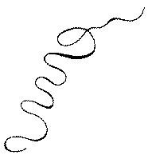

|
T H E L I F E A N D O P I N I O N S O F TRISTRAM SHANDY, G E N T L E M A N.
V O L. IX. L O N D O N : Printed for T. BECKET and P. A. DEHONT, in the Strand. MDCCLXVII. |
|
________________________________________________ A D E D I C A T I O N T O A G R E A T M A N. HAVING, a priori, intended to dedicate The Amours of my uncle Toby to Mr. * * * ---- I see more reasons, a posteriori, for doing it to Lord * * * * * * *. I should lament from my soul, if this exposed me to the jealousy of their Reverences ; because, a posteri- VOL. IX. a ori, |
D E D I C A T I O N
|
ori, in Court-latin, signifies, the kissing hands for preferment -- or any thing else -- in order to get it. My opinion of Lord * * * * * * * is neither better nor worse, than it was of Mr. * * *. Honours, like im- pressions upon coin, may give an ideal and local value to a bit of base metal ; but Gold and Silver will pass all the world over without any other recommendation than their own weight. The same good will that made me think of offering up half an hour's amusement to Mr. * * * when out of place -- operates more forcibly at present, |
D E D I C A T I O N
|
present, as half an hour's amuse- ment will be more serviceable and refreshing after labour and sorrow, than after a philosophical repast. Nothing is so perfectly Amuse- ment as a total change of ideas ; no ideas are so totally different as those of Ministers, and inoccent Lovers : for which reason, when I come to talk of Statesmen and Patriots, and set such marks upon them as will prevent confusion and mistakes con- cerning them for the future -- I pro- pose to dedicate that Volume to some gentle Shepherd, Whose Thoughts proud Science never taught to stray, Far as the Statesman's walk or Patriot-way ; Yet |
D E D I C A T I O N
|
Yet simple Nature to his hopes had given Out of a cloud-capp'd head a humbler heaven ; Some untam'd World in depth of woods em- braced -- Some happier Island in the watry-waste -- And where admitted to that equal sky, His faithful Dogs should bear him company. In a word, by thus introducing an entire new set of objects to his Imagi- nation, I shall unavoidably give a Diversion to his passionate and love- sick Contemplations. In the mean- time, I am, The A U T H O R. |
  T H E T H EL I F E and O P I N I O N S O F T R I S T R A M S H A N D Y, Gent. ________________________________ I CALL all the powers of time and chance, which severally check us in our careers in this world, to bear me witness, that I could never yet get fairly to my uncle Toby's amours, till this very moment, that my mother's curiosity, VOL. IX B as |
[ 2 ]
|
as she stated the affair, ---- or a different impulse in her, as my father would have it ---- wished her to take a peep at them through the key-hole. ``Call it, my dear, by its right name, quoth my father, and look through the key-hole as long as you will.'' Nothing but the fermentation of that little subacid humour which I have often spoken of, in my father's habit, could have vented such an insinuation ---- he was however frank and generous in his nature, and at all times open to convic- tion ; so that he had scarce got to the last word of this ungracious retort, when his conscience smote him. My |
[ 3 ]
|
My mother was then conjugally swinging with her left arm twisted under his right, in such wise that the inside of her hand rested upon the back of his -- she raised her fingers, and let them fall -- it could scarce be call'd a tap ; or if it was a tap ---- 'twould have puzzled a casuist to say whether 'twas a tap of re- monstrance, or a tap of confession : my father, who was all sensibilities from head to foot, class'd it right -- Conscience re- doubled her blow -- he turn'd his face suddenly the other way, and my mother supposing his body was about to turn with it in order to move homewards, by a cross movement of her right leg, keeping her left as its centre, brought herself so far in front that as he turned B 2. his |
[ 4 ]
|
head, he met her eye ------ Confu- sion again! he saw a thousand reasons to wipe out the reproach, and as many to reproach himself ---- a thin, blue, chill, pellucid chrystal with all its humours so at rest, the least mote or speck of desire might have been seen at the bottom of it, had it existed ---- it did not --- and how I happen to be so lewd myself, particularly a little before the vernal and autumnal equinoxes ---- Heaven above knows ---- My mother ---- madam ---- was so at no time, either by nature, by institution, or example. A temperate current of blood ran or- derly through her veins in all months of the year, and in all critical moments both of |
[ 5 ]
|
of the day and night alike ; nor did she superinduce the least heat into her hu- mours from the manual effervescencies of devotional tracts, which having little or no meaning in them, nature is oft times obliged to find one ---- And as for my father's example! 'twas so far from being either aiding or abetting thereunto, that 'twas the whole business of his life to keep all fancies of that kind out of her head ---- Nature had done her part, to have spared him this trouble ; and what was not a little inconsistent, my father knew it ---- And here am I sitting, this 12th day of August, 1766, in a pur- ple jerkin and yellow pair of slippers, without either wig or cap on, a most B 3 tragi- |
[ 6 ]
|
tragicomical completion of his predic- tion ``That I should neither think, ``nor act like any other man's child, ``upon that very account.'' The mistake of my father was in attacking my mother's motive, instead of the act itself : for certainly key-holes were made for other purposes ; and considering the act as an act which interfered with a true proposition, and denied a key-hole to be what it was ------ it became a violation of na- ture ; and was so far, you see, cri- minal. It is for this reason, an' please your Reverences, That key-holes are the |
[ 7 ]
|
the occasions of more sin and wicked- ness than all other holes in this world put together. ---- which leads me to my uncle Toby's amours. B 4 CHAP. |
[ 8 ]
|
Though the Corporal had been as good as his word in put- ting my uncle Toby's great ramillie-wig into pipes, yet the time was too short to produce any great effects from it : it had lain many years squeezed up in the corner of his old campaign trunk ; and as bad forms are not so easy to be got the better of, and the use of candle- ends not so well understood, it was not so pliable a business as one would have wished. The Corporal with cheary eye and both arms extended, had fallen back perpendicular from it a score times, to inspire it, if possible, with a better air ---- had SPLEEN given a look at it, 'twould |
[ 9 ]
|
'twould have cost her Ladyship a smile ---- it curl'd every where but where the Corporal would have it ; and where a buckle or two, in his opinion, would have done it honour, he could as soon have raised the dead. Such it was ---- or rather such would it have seem'd upon any other brow ; but the sweet look of goodness which sat upon my uncle Toby's assimilated every thing around it so sovereignly to it- self, and Nature had moreover wrote GENTLEMAN with so fair a hand in every line of his countenance, that even his tarnish'd gold laced hat and huge cock- ade of flimsy taffeta became him ; and though not worth a button in themselves, yet the moment my uncle Toby put them on, they became serious objects, and |
[ 10 ]
|
and altogether seem'd to have been picked up by the hand of Science to set him off to advantage. Nothing in this world could have co- operated more powerfully towards this, than my uncle Toby's blue and gold ---- had not Quantity in some measure been ne- cessary to Grace : in a period of fifteen or sixteen years since they had been made, by a total inactivity in my uncle Toby's life, for he seldom went further than the bowling-green -- his blue and gold had become so miserably too strait for him, that it was with the utmost difficulty the Corporal was able to get him into them : the taking them up at the sleeves was of no advantage. ---- They were laced however down the back, and at the seams of the sides, &c., in the mode of King William's |
[ 11 ]
|
William's reign ; and to shorten all de- scription, they shone so bright against the sun that morning, and had so metallick, and doughty an air with them, that had my uncle Toby thought of attacking in armour, nothing could have so well im- posed upon his imagination. As for the thin scarlet breeches, they had been unripp'd by the taylor between the legs, and left at sixes and sevens ---- ---- Yes, Madam, ---- but let us go- vern our fancies. It is enough they were held impracticable the night before, and as there was no alternative in my uncle Toby's wardrobe, he sallied forth in the red plush. The Corporal had array'd himself in poor Le Fevre's regimental coat ; and with |
[ 12 ]
|
with his hair tuck'd up under his Mon- tero cap, which he had furbish'd up for the occasion march'd three paces distant from his master : a whiff of mi- litary pride had puff'd out his shirt at the wrist ; and upon that, in a black lea- ther thong clipp'd into a tassel beyond the knot, hung the Corporal's stick ---- My uncle Toby carried his cane like a pike. ---- It looks well at least, quoth my father to himself. C H A P. |
[ 13 ]
|
MY uncle Toby turn'd his head more than once behind him, to see how he was supported by the Corpo- ral ; and the Corporal, as oft as he did it, gave a slight flourish with his stick -- but not vapouringly ; and with the sweet- est accent of most respectful encourage- ment, bid his honour ``never fear.'' Now my uncle Toby did fear ; and grievously too : he knew not (as my fa- ther had reproach'd him) so much as the right end of a Woman from the wrong, and therefore was never altogether at his ease near any one of them ---- unless in sorrow or distress ; then infinite was his pity ; nor would the most courteous knight |
[ 14 ]
|
knight of romance have gone further, at least upon one leg, to have wiped away a tear from a woman's eye ; and yet ex- cepting once that he was beguiled into it by Mrs. Wadman, he had never looked stedfastly into one ; and would often tell my father, in the simplicity of his heart, that it was almost (if not alout) as bad as talking bawdy. ---- ---- And suppose it is? my father would say. C H A P. |
[ 15 ]
|
SHE cannot, quoth my uncle Toby, halting, when they had march'd up to within twenty paces of Mrs. Wad- man's door -- she cannot, Corporal, take it amiss. ---- ---- She will take it, an' please your honour, said the Corporal, just as the Jew's widow at Lisbon took it of my brother Tom. ---- ---- And how was that? quoth my uncle Toby, facing quite about to the Corporal. Your honour, replied the Corporal, knows of Tom's misfortunes ; but this affair |
[ 16 ]
|
affair has nothing to do with them any further than this, That if Tom had not married the widow ---- or had it pleased God after their marriage, that they had but put pork into their sausa- ages, the honest soul had never been taken out of his warm bed, and dragg'd to the inquisition ---- 'Tis a cursed place -- added the Corporal, shaking his head, -- when once a poor creature is in, he is in, an' please your honour, for ever. 'Tis very true, said my uncle Toby looking gravely at Mrs. Wadman's house, as he spoke. Nothing, continued the Corporal, can be so sad as confinement for life -- or so sweet, an' please your honour, as liberty. Nothing |
[ 17 ]
|
Nothing, Trim ---- said my uncle Toby, musing ---- Whilst a man is free -- cried the Cor- poral, giving a flourish with his stick thus ---- |
 |
|
VOL. IX. C |
[ 18 ]
|
A thousand of my father's most subtle syllogisms could not have said more for celibacy. My uncle Toby look'd earnestly to- wards his cottage and his bowling green. The Corporal had unwarily conjured up the Spirit of calculation with his wand ; and he had nothing to do, but to conjure him down again with his story, and in this form of Exorcism, most unecclesiastically did the Corporal do it. C H A P. |
[ 19 ]
|
AS Tom's place, an' please your honour, was easy -- and the wea- ther warm -- it put him upon thinking se- riously of settling himself in the world ; and as it fell out about that time, that a Jew who kept a sausage shop in the same street, had the ill luck to die of a stran- gury, and leave his widow in possession of a rousing trade ---- Tom thought (as every body in Lisbon was doing the best he could devise for himself) there could be no harm in offering her his service to carry it on : so without any introduction to the widow, except that of buying a pound of sausages at her shop -- Tom set out -- counting the matter thus within C 2 himself |
[TABLE OF CONTENTS] [VOLUME IX] [NEXT]